I have not finished to put everything together also I’m getting there.
Here is the current status of the “cargo test” output, which is testing my code against the expected output provided.
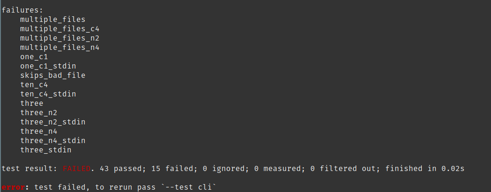
In a nutshell some of the failed test will need more investigations to be fixed since the are related how characters and strings are interpreted in Rust. This potentially will require a redesign of my program.
One failure is more personal interpretation of the expected output, this is the “skips_bad_file”
Concretely this is the expected output by the tests cases:
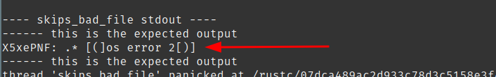
This is the output of my version of head
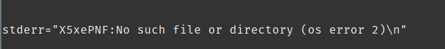
And this is the output of the GNU coreutils head version
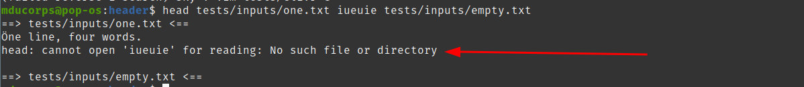
Also, I don’t understand the expected output by the test cases, for the sake of getting 100% pass of the test, I will fix my code to match the expected output.
And I will probably write a new test that match GNU Coreutils head version.
This shows one of the limit of TDD model regarding development, I have the feeling this is good for University, PhD or white paper but not yet convinced this is very efficient to apply in a production pipeline. I think tests should be written along the way to meet the expectation of the production and not only the expectation of the developer which doesn’t have the same perspective, I’m digressing and that’s another topic on it’s own that I may address in 20 years when I have more experience on the subject.
From the failed test above, let’s start from the bottom, related to the “three” tests,
This is going to be an interesting investigation because most of the tests failed for “three”. This file being part of the “multiple_files” test case once this is fixed I should have a good proportion of my remaining failing tests to pass.
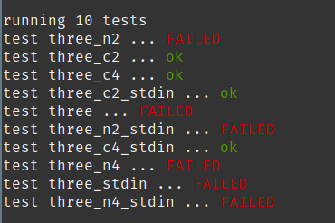
Let’s look at this case through “multiple_files” failed test
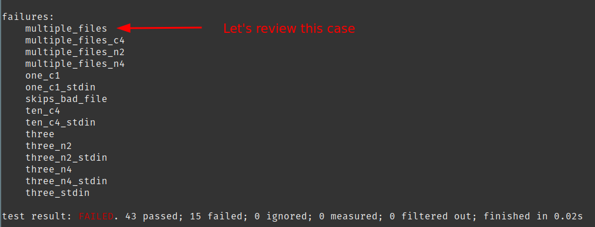
This is the output of my version of head
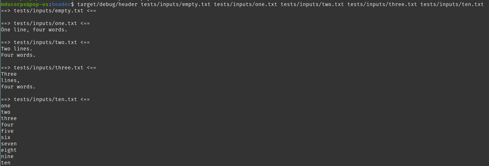
This this the output of GNU coreutils head.
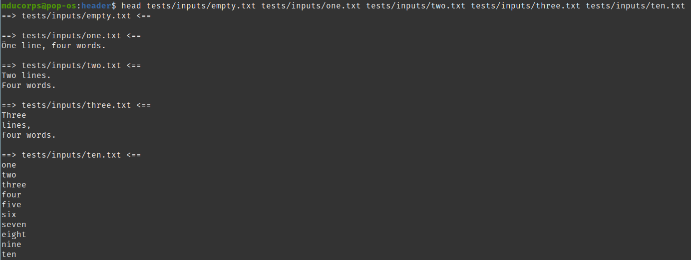
Running both in a bash shell, visually I don’t see any differences but the “cargo test” is failing.
Obviously, I have an issue where the output is not strictly the same.
Doing a diff of both output is effectively reporting a difference on lines 11 and 12, even if it is not visually reported in my bash output.
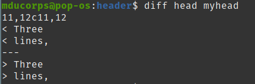
Line count of each version of both output
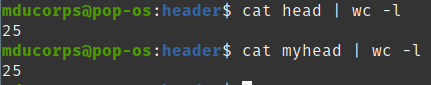
I did a test where I’m converting to hexadecimal both output, I do see differences but this time at different place of the files 11 and 19, which doesn’t match the diff above which is on line 11 and 12
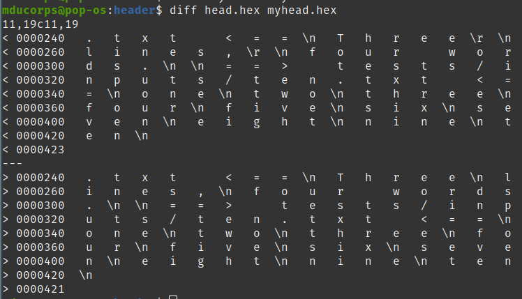
Line count of each hexadecimal version of both output
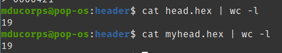
The Hexadecimal output is not really interesting in this case, and doesn't really help me because I’m not able to interpret it correctly to understand what is my issue.
So, let’s take another path, i have opened both output in my vim editor and show all non-printable characters.
This is the output of my rust version of head
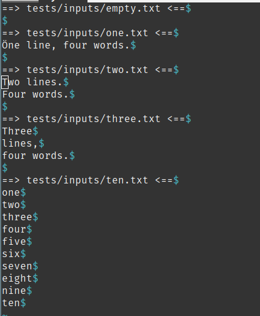
This is the version of GNU coreutils head
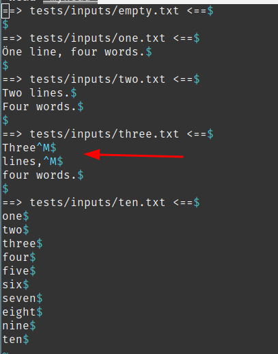
Interesting to see that we have a character “^M” at the end of two lines that I don’t have in my output.
Let’s have a look at the original source file on which I’m running both “head”
Tada !
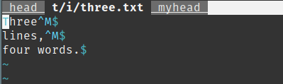
Doing googling ( old school :D ) this character “^M” is the way for vim to represent the Windows newline character which is a combination of two characters “0xD 0xA”, where in UNIX the new line character is “0xA”.
So this means this file has been edited at some point on a Windows machine.
And the GNU Coreutils head version is keeping it in the output where my Rust version doesn’t.
At first I would consider this is better to strip out this unnecessary character, but one can argue that doing so I’m altering the original file which could have been built this way intentionally.
This is quite a specific use case, also I’m interested to see if I can manage to comply to the GNU coreutils head version and pass around all the characters.
This is for the next round.
See you there !
With kind regards